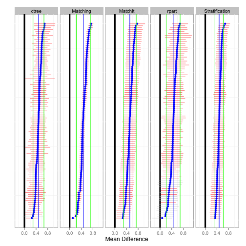
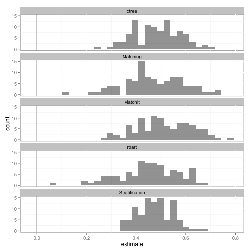
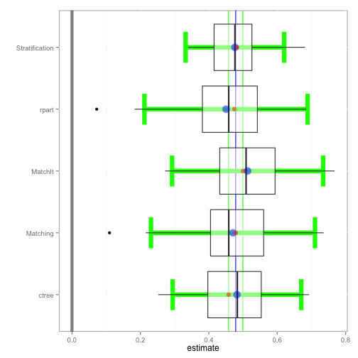
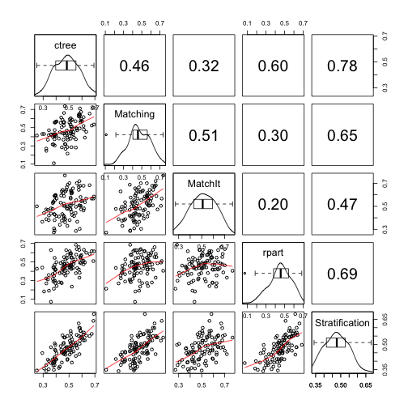
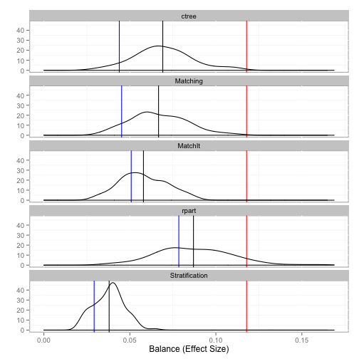
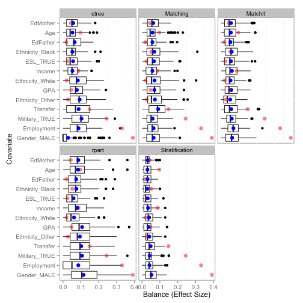

Bootstrapping for Propensity Score Analysis
I am happy to announce that version 1.0 of the PSAboot package has been released to CRAN. This package implements bootstrapping for propensity score analysis. This deviates from typical implementations such as boot in that it allows for separate sampling specifications for treatment and control units. For example, in the case where the ratio of treatment-to-control units is large, one can bootstrap only the control units while always using all available treatment units. Additionally, this package will estimate treatment effects using multiple methods for each bootstrap sample. In addition to adhering to Rosenbaum’s (2012) advise of “Testing One Hypothesis Twice in Observational Studies”, we can compare the performance of different methods across many samples. Lastly, a set of functions to estimate and visualize balance across bootstrap samples and methods are provided.
You can get more details on the project page and the vignette. The project is hosted on Github project page. Download the latest version or submit bugs there.
This package supports stratification using ctree (from the party package), rpart, and quintiles (using fitted values from logistic regression) and well as matching using the MatchIt and Matching packages. The project page outlines how to write custom methods.
The following example uses the tutoring dataset in the TriMatch package. This study examined the effects of tutoring on student grades in writing courses. The treatment group was defined a students who used tutoring services during their course. The control group are students in a course section with at least one student who used the tutoring services. The PSAboot performs the bootstrap analysis and returns an object of class PSAboot. The summary, plot, hist, boxplot, and matrixplot S3 methods are implemented.
require(PSAboot)
# Loading required package: PSAboot
# Loading required package: PSAgraphics
# Loading required package: rpart
data(tutoring, package='TriMatch')
tutoring$treatbool <- tutoring$treat != 'Control'
covs <- tutoring[,c('Gender', 'Ethnicity', 'Military', 'ESL', 'EdMother', 'EdFather',
'Age', 'Employment', 'Income', 'Transfer', 'GPA')]
table(tutoring$treatbool)
#
# FALSE TRUE
# 918 224
tutoring.boot <- PSAboot(Tr=tutoring$treatbool,
Y=tutoring$Grade,
X=covs,
seed=2112)
# 100 bootstrap samples using 5 methods.
# Bootstrap sample sizes:
# Treated=224 (100%) with replacement.
# Control=918 (100%) with replacement.The summary function provides numeric results for each method including the overall estimate and confidence interval using the complete sample as well as the pooled estimates and confidence intervals with percentages of the number of confidence intervals that do not span zero.
summary(tutoring.boot)
# Stratification Results:
# Complete estimate = 0.482
# Complete CI = [0.3, 0.665]
# Bootstrap pooled estimate = 0.476
# Bootstrap pooled CI = [0.332, 0.62]
# 100% of bootstrap samples have confidence intervals that do not span zero.
# 100% positive.
# 0% negative.
# ctree Results:
# Complete estimate = 0.458
# Complete CI = [0.177, 0.739]
# Bootstrap pooled estimate = 0.482
# Bootstrap pooled CI = [0.294, 0.67]
# 99% of bootstrap samples have confidence intervals that do not span zero.
# 99% positive.
# 0% negative.
# rpart Results:
# Complete estimate = 0.475
# Complete CI = [0.165, 0.784]
# Bootstrap pooled estimate = 0.45
# Bootstrap pooled CI = [0.212, 0.689]
# 84% of bootstrap samples have confidence intervals that do not span zero.
# 84% positive.
# 0% negative.
# Matching Results:
# Complete estimate = 0.479
# Complete CI = [0.388, 0.571]
# Bootstrap pooled estimate = 0.471
# Bootstrap pooled CI = [0.231, 0.711]
# 100% of bootstrap samples have confidence intervals that do not span zero.
# 100% positive.
# 0% negative.
# MatchIt Results:
# Complete estimate = 0.5
# Complete CI = [0.253, 0.747]
# Bootstrap pooled estimate = 0.513
# Bootstrap pooled CI = [0.293, 0.734]
# 100% of bootstrap samples have confidence intervals that do not span zero.
# 100% positive.
# 0% negative.The plot function plots the estimate (mean difference) for each bootstrap sample. The default is to sort from largest to smallest estimate for each method separately. That is, rows do not correspond across methods. The sort parameter can be set to none for no sorting or the name of any method to sort only based upon the results of that method. In these cases the rows then correspond to matching bootstrap samples. The blue points correspond to the the estimate for each bootstrap sample and the horizontal line to the confidence interval. Confidence intervals that do not span zero are colored red. The vertical blue line and green lines correspond to the overall pooled estimate and confidence for each method, respectively.
plot(tutoring.boot)
The hist function plots a histogram of the estimates across all bootstrap samples for each method.
hist(tutoring.boot)
# stat_bin: binwidth defaulted to range/30. Use 'binwidth = x' to adjust this.
# stat_bin: binwidth defaulted to range/30. Use 'binwidth = x' to adjust this.
# stat_bin: binwidth defaulted to range/30. Use 'binwidth = x' to adjust this.
# stat_bin: binwidth defaulted to range/30. Use 'binwidth = x' to adjust this.
# stat_bin: binwidth defaulted to range/30. Use 'binwidth = x' to adjust this.
The boxplot function depicts the distribution of estimates for each method along with confidence intervals in green. Additionally, the overall pooled estimate and confidence interval across all bootstrap samples and methods are represented by the vertical blue and green lines, respectively.
boxplot(tutoring.boot)
# Loading required package: ggthemes
The matrixplot summarizes the estimates across methods for each bootstrap sample. The lower half of the matrix are scatter plots where each point represents the one bootstrap sample. The red line is a Loess regression line. The main diagonal depicts the distribution of effects and the upper half provides the correlation of estimates.
matrixplot(tutoring.boot)
The balance function will provide balance statistics. The print, plot, and boxplot S3 methods are implemented.
tutoring.balance <- balance(tutoring.boot)
tutoring.balance
# Unadjusted balance: 0.117875835338968
# Complete Bootstrap
# Stratification 0.02923 0.03795
# ctree 0.04385 0.06913
# rpart 0.07846 0.08698
# Matching 0.04522 0.06668
# MatchIt 0.05078 0.05790
plot(tutoring.balance)
boxplot(tutoring.balance)